| No. | Default GIS Attribute Name | Description | Type |
|---|---|---|---|
1 |
Inlet |
The name of the inlet defined in the SWMM inp file “INLETS” section |
Char (100) |
2 |
StreetXSEC |
The name of the street cross-section that must be included in the SWMM SWMM inp file “Streets” section. |
Char (100) |
3 |
Elevation |
The elevation of the inlet. If a value of -99999 is entered, the elevation will be based on the 2D cell’s elevation. |
Float |
4 |
SlopePct_Long |
The longitudinal slope of the street near the inlet. |
Float |
5 |
Number |
The number of inlets in series at the location (generally 1). |
Integer |
6 |
CloggedPct |
The percentage that the inlet is blocked (defaults to 0.0). |
Float |
7 |
Qmax |
The maximum discharge through the inlet (default is 0 which does not enforce a maximum). |
Float |
8 |
aLocal |
The depth of a local depression at the inlet (default 0.0). |
Float |
9 |
wLocal |
The width of a local depression at the inlet (default 0.0). |
Float |
10 |
Placement |
Specifies whether the inlet should be treated as a sag or on-grade. Options are ON_GRADE, ON_SAG, or AUTOMATIC. AUTOMATIC (the default) will switch between ON_GRADE and ON_SAG depending upon the flow conditions at the inlet. |
Char(10) |
11 |
Conn1D_2D |
Used to specify a “SX” connection and any additional flags such as “SXZ” or “SXG” that automatically creates a 2D SX cell and connection at the 2D cell within which the SWMM node occurs. This negates the need to create SX objects in a 2d_bc layer. Flags:
By default, if more than one 2D cell is automatically connected, nodes are assumed to be connected using the Sag (S) approach. To override the default approach, specify “SXG” for an on-grade connection. |
Char (10) |
12 |
Conn_Width |
If “SX” is specified for Conn1D_2D, this field controls the number of 2D cells connected as follows. Note this approach is slightly different than is used by TUFLOW-ESTRY models.
|
Float |
10 Combining Domains and Solvers
10.1 Introduction
This chapter discusses methods available for dynamically linking 1D and 2D domains, linking with external (third-party) 1D solvers, and linking 2D domains together using Classic’s Multiple 2D Domains feature. HPC’s Quadtree feature, whilst allowing variable 2D cell sizes, is essentially one 2D domain over which a full 2D solution is applied is discussed in Section 7.3.1. A comparison between Classic’s M2D feature and HPC’s quadtree grid is presented in Section 10.7.
The range of functionalities discussed in the Chapter offer numerous benefits, including greater model design flexibility, greater computational efficiency and performance, and ability to integrate TUFLOW domains within supported third-party 1D solvers and models.
1D-2D linked models utilise the individual benefits of 1D and 2D solution schemes. 1D schemes are typically used to represent culverts or sub-surface pipe networks, and sometimes rivers, where the flow is essentially one-directional. 2D schemes are suited to the representation of, for example, rivers and floodplains or estuarine and coastal waters, where the hydrodynamics can flow in multiple horizontal directions, which requires the ability to simulate flow in a two-dimensional plane.
TUFLOW’s 2D solutions (Classic and HPC) may be dynamically linked to a variety of different 1D solutions, including TUFLOW 1D (ESTRY), EPA SWMM (herein referred to as SWMM in this chapter), Flood Modeller (formerly ISIS), 12D Dynamic Drainage (DDA), and XPSWMM from Autodesk (formerly XP-Software then Innovyze).
Within the one model, 1D domains that are TUFLOW 1D (ESTRY) and other 1D domains that are an external 1D scheme can occur. This may be useful where different 1D solvers offer different capabilities. Further, linking of TUFLOW 1D (ESTRY) directly to either Flood Modeller or SWMM is also possible.
The software environment for the 1D Solver / TUFLOW 2D combination varies:
- TUFLOW 1D (ESTRY) and SWMM are integrated within the TUFLOW executable. Model build tasks and result viewing associated with these linked 1D solvers is typically completed using traditional TUFLOW compatible GIS software.
- 12D Dynamic Drainage is developed by 12D Solutions. They have developed a TUFLOW interface within their own 12D GUI that offers GUI functionality for 1D and 2D modelling tasks. The interface provides users with the ability to build models and view results entirely within its GUI. Alternatively, existing TUFLOW files created in a GIS form can be imported and used in the 12D GUI.
- Flood Modeller, developed by Jacobs (formerly the ISIS software developed by Halcrow), is not built into the TUFLOW executable. Flood Modeller must be purchased from Jacobs, installed and configured, and to link with TUFLOW, the Flood Modeller TUFLOW Link must also be purchased and installed. Flood Modeller accesses the TUFLOW solvers via the TUFLOW_LINK.dll that is part of the standard TUFLOW download. The Flood Modeller GUI is used for 1D model build tasks, and execution of the linked Flood Modeller 1D / TUFLOW model. The TUFLOW script (control) file and GIS environment is typically used for the TUFLOW 1D and 2D components.
- XPSWMM functions in a fully independent GUI with TUFLOW fully embedded and operated “behind-the-scenes”. As such, the model development and results viewing information in this manual is not applicable and reference should be made to the XPSWMM documentation as supplied with the software. However, when XPSWMM runs a simulation with TUFLOW linked, all the standard TUFLOW script files, GIS layers and result outputs are written to disk should the user with to access these in their native formats.
Varying the 2D cell size within a single model enables use of smaller cell sizes (finer resolution) in areas where a more detailed assessment is required or a finer grid is required to accurately represent the hydraulics, with the larger cell sizes covering the remaining areas of the model. The ability to vary 2D cell sizes within the one model optimises the grid construct thereby reducing simulation times and the memory footprint compared to a model that adopts a fine resolution over the entire model domain.
Both TUFLOW Classic and HPC offer the ability to vary 2D cell sizes using two different approaches: - TUFLOW Classic offers 2D-2D linking of different 2D domains via the Multiple 2D Domains (M2D) Module. 2D-2D linked Classic models allow for a single model to contain multiple 2D domains of different cell sizes and different orientations. The 2D-2D link is via hidden TUFLOW 1D nodes that essentially pass the water from one 2D domain to another using HX links. The solution across the link is not a full 2D solution, rather a linked 2D-1D-2D solution results that may not be as accurate as a full 2D solution. - TUFLOW HPC doesn’t support Classic’s 2D-2D linking, but supports varying 2D cell sizes using a full 2D solution across a quadtree grid (the Quadtree Module, which purchase/licence wise is shared with Classic’s M2D Module, is required). The quadtree grid requires all 2D cells are on the same orientation and they can only vary in size by a factor of two when transitioning from a smaller cell to a larger cell.
10.2 1D and 2D Domain Linking Theory
TUFLOW 1D and 2D domains can be linked in a variety of ways. Common configurations, as shown in Figure 10.1, include:
- 1D culverts through 2D embankments.
- 1D pipe networks underneath the 2D domain.
- Nesting of a 1D open channel (e.g. creek or river) through a 2D domain.
- Connection of a broader 1D network catchment model to a high resolution 2D domain.
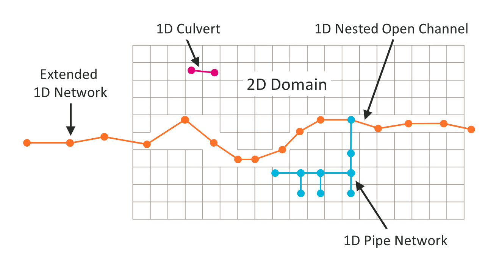
There are two types of 1D/2D linking options available:
- Head (water level) boundaries to the 2D cells (HX); and
- Source boundaries to the 2D cells (SX).
These are described in the sections below.
10.2.1 HX 2D Head Boundary
The HX terminology is derived from a Head boundary being applied to the 2D cell using data from an eXternal 1D scheme. This type of connection can be used to connect TUFLOW 2D with the 1D schemes of ESTRY (TUFLOW 1D), SWMM, Flood Modeller and XPSWMM. HX lines are typically used along riverbanks to define the 1D-2D exchange when 1D is used for in-channel representation, linked to the floodplain in 2D (commonly referred to as, 1D nested open channel modelling).
For 1D nested open channel modelling, the HX cells are defined using HX lines, connected to 1D nodes (i.e. the start and end of 1D channel lines) via connection (CN) lines. HX and CN line type objects are defined in the 2d_bc format layer. The 2d_bc layer is often renamed with the prefix 2d_hx should the modeller choose to store the HX lines in their own layer(s). The CN lines are snapped to the 1D nodes and vertices along the HX line.
The open channel area modelled by 1D must be deactivated from the 2D domain (2d_code: code = 0) otherwise the flow down the open channel will be duplicated in both the 1D and 2D domains. These model features are presented in Figure 10.2.
When TUFLOW carries out the hydraulic calculations, water level information at the 1D nodes is transferred to the HX line vertices that are connected to the 1D nodes via the CN lines. Along the HX lines, between the connected vertices, the water levels are linearly interpolated.
A HX line must have a CN line connected to each of its ends, along with any connections from intermediate 1D nodes to HX line vertices. Not every HX vertex has to have a 1D node connected. However, should a 1D node not be connected, the water level from that 1D node will not contribute to setting the water level profile along the HX line and undesirable results may occur.
If a single 1D node is connected to both ends of a HX line, the water levels in the 2D cells along the HX line will all be the same thereby producing a horizontal water level profile along the HX line. This approach is typically used for upstream boundaries into a 2D domain, and the line must be roughly digitised perpendicular to the flow (alternatively use a 2D QT boundary which automates this set up).
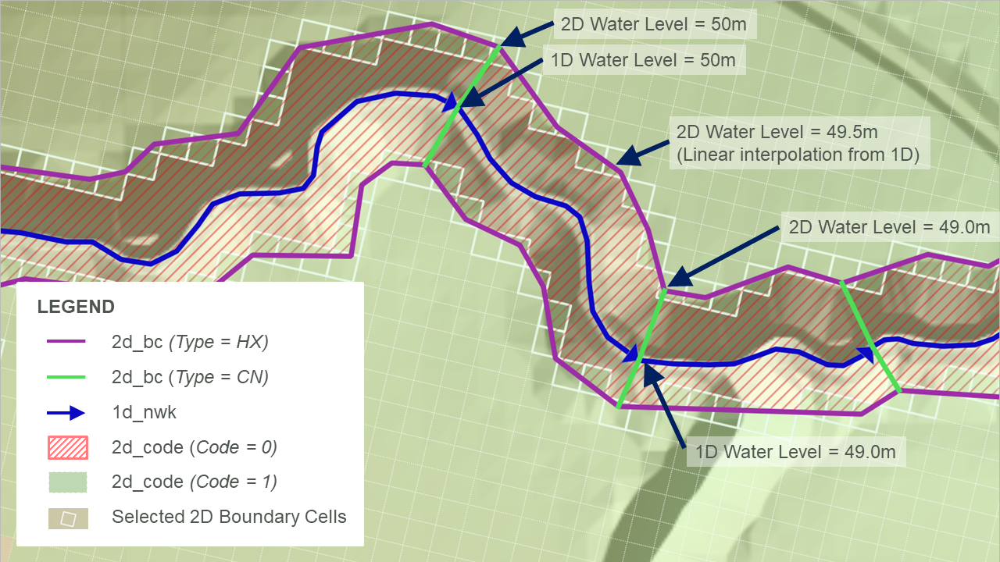
Flow can either enter or leave HX cells. The volume of water entering or leaving the cells is added or subtracted from the connected 1D nodes to conserve mass. The HX link preserves momentum in the sense that the velocity field is assumed to be undisturbed across the link, however, the solution across the HX line is not a complete 2D solution as the velocity field on the inactive side of the HX line is assumed, not calculated. The 2D velocity direction is not influenced by the direction of the linked 1D channel.
Because of the momentum preservation, the HX link approach produces a superior 1D-2D linking performance where complex flow behaviour occurs (e.g. river/floodplain interactions) than using a flow source approach such as applying a weir flow equation across the link. Figure 10.3 shows an example of the preservation of momentum across HX lines (shown in light purple) as water flows across a meander where the main channel is represented in 1D.

The elevations of 1D-2D boundary cells determine when water can transfer between the 1D and 2D. Water level is calculated at the cell centres in the 2D engine (see Section 7.1.3), once the water level in the 1D node exceeds the elevation in the HX cell, water can enter or leave the cell. As such, an accurate definition of the 2D HX cell centre elevations is important. If a levee aligns with the HX line, a 2d_zsh thick breakline is recommended along the levee to ensure that the 1D-2D boundary cell elevations are consistent with the levee or spill crest.
In the four panels of Figure 10.4, the 2D HX connection is shown in section view at four differing water level stages:
- Panel 1: In bank flow: the water level in the 1D section is below the 2D cell elevation and no flow is occurring across the 1D-2D connection.
- Panel 2: Spill into the floodplain: the water level in the 1D section is above the 2D cell elevation along the left bank (but not the right bank). In this case, water is spilling from the 1D channel into the 2D floodplain on the left bank.
- Panel 3: Flow from floodplain: the water level in the 1D is below the water levels on the 2D floodplains and water will drain from the 2D domain into the 1D channel, which typical occurs during a flood recession.
- Panel 4: Perched floodplain: the flow is still moving from the 2D into the 1D on the left bank, however, on the right bank, the water level in the floodplain is below the 2D HX cell elevation and no flow is occurring (the water is perched).
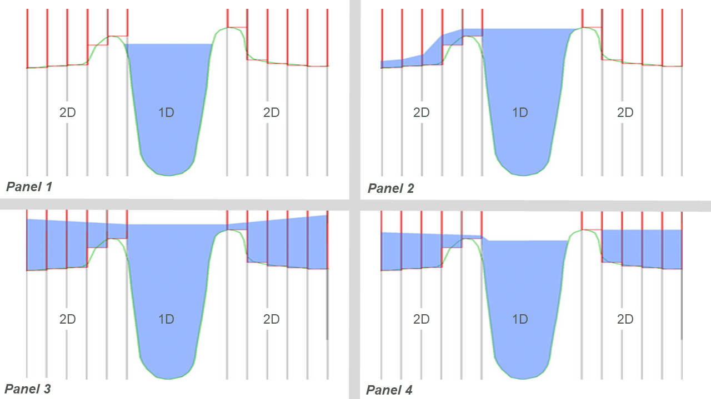
In addition to 1D-2D connections associated with nested 1D open channel / 2D floodplain situations, HX connections are also used to connect a 2D domain embedded within a broader 1D network representing the upstream and/or downstream river sections further afield. In Figure 10.5, HX lines are shown along the upstream inflow to the 2D Domain as purple lines, the CN lines are shown in green. The CN lines are snapped to the 1D node at the end of the 1D network and the two vertices at either end of the HX line.
The water level at the 1D node is uniformly applied to the HX cells wherever the water level exceeds the cell ZC elevation. As the water level applied along the HX line will be horizontal the HX line must be digitised roughly perpendicular to the expected flow direction. Should the line not be perpendicular, circulatory flows maybe generated, so check that the flow patterns along HX lines appear to be reasonable.
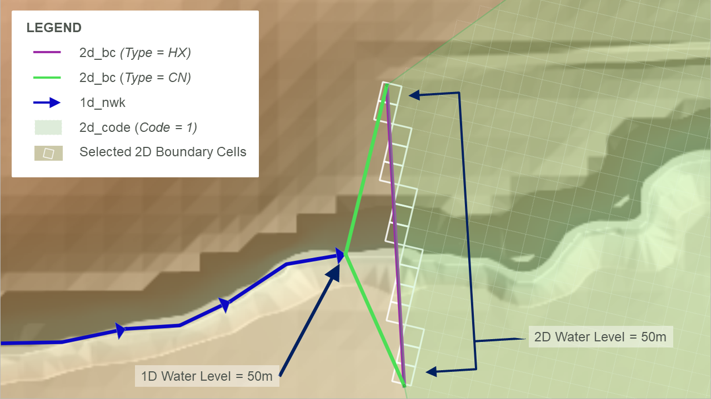
Note that for all HX links, the cell centre elevation (ZC) at a HX cell must be above the 1D bed level (interpolated between connected 1D nodes) otherwise an artificial flow across the link will be produced. To enforce this, TUFLOW produces an error message during the model initialisation, and terminates the simulation, if the interpolated 1D node elevation exceeds the 2D HX cell centre elevation (ZC). The ERROR message(s) are geo-referenced to easily identify the HX cells that lie below the 1D bed profile.
10.2.2 SX 2D Flow Boundaries
The SX terminology is derived from a Source boundary being applied to the 2D cell using data from an eXternal 1D scheme. This type of connection can be used to connect TUFLOW 2D with the 1D schemes of TUFLOW 1D (ESTRY), Flood Modeller, SWMM and XPSWMM. SX connections are typically used to transfer flow between 1D and 2D for 1D structures and at pits/drains/gully traps that capture water into the pipe network. Unique to SWMM, when using it as the 1D solver, an SX connection is only required at the downstream end of a 1D culvert (it uses a HX link at the upstream end due to limitations of the SWMM software). SX can be connected to the surface water (see Section 10.2.2.1) or to the groundwater (see Section 10.2.2.2).
At SX connections, the water level at the 1D node is reset every timestep as the average water level along the 2D SX cell(s). Conversely, the flow into or out of the 1D element feeds into the 2D SX cell(s) as a flow of water with the water level at the 2D cells computed as part of the 2D SWE solution. As the water level at the 1D node is set based on the water level in the SX cells, the storage in the 1D node is not used computationally in the 1D. Where there is an SX connection to 2D cell(s) from a 1D node, the average 1D node storage is distributed across the connected 2D SX cells.
SX objects are digitised in the 2d_bc layer and have the type set to “SX”. They can either be a point (a single SX cell), line (multiple SX cells) or region object (multiple SX cells). When using the SX line and region objects, these are joined to the 1D nodes with a single CN type object, also in the 2d_bc layer, as shown in Figure 10.6. The (2d_bc) SX point, line and region objects are shown in purple, the (2d_bc) CN lines are shown in green, and the cells selected for the SX 1D-2D connection are highlighted in white.
- When using an SX point, the point object needs to snap to the 1d network (1d_nwk) at the nodes (end of the culvert). A single 2D cell is selected for the 1D-2D SX connection.
- When using an SX line, a connection line snaps to the SX line and the 1d network (1d_nwk) node. Multiple 2D cells are selected for the 1D-2D SX connection. If the line does not select any 2D cells a single 2D cell is selected based on the line’s mid-point.
- When using an SX region, a connection line snaps to a vertex of the SX region and 1d network (1d_nwk) node. Multiple 2D cells are selected for the 1D-2D SX connection based on whether the 2D cell centre falls within the region. If the region does not select any 2D cells a single 2D cell is selected based on the region’s centroid.
10.2.2.1 SX 2D Flow Boundary to Surface Water
The flow onto the SX cells is treated as a source flow, i.e. it can be positive or negative in magnitude but has no directional component. If there is more than one SX cell connected, the flow is, by default, proportioned via the depths in the 2D SX cells. The SX Flow Distribution Cutoff Depth command can be used to control the depth of water below which an SX cell does not receive flows from the connected 1D element.
When connecting an SX connection for a 1D structure it is important to ensure that the width of connected SX cells at the structure invert (and higher levels for irregular shaped structures) is equal or more than the width of the 1D structure. This check should take into account whether any of the 2D SX cells are dry at the level being checked. If the width of water flow across the SX cells is less than the flow width of the 1D structure, the 2D SX cells become the constriction and instabilities or unrealistic flow patterns may result.
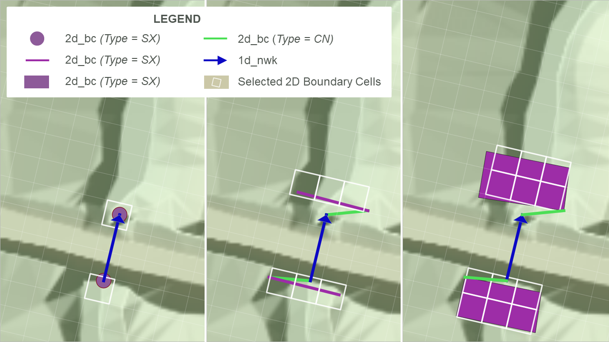
The lowest 2D SX cell (based on the ZC, cell centre, elevation) must be below the 1D bed level (invert) otherwise mass can be artificially generated. TUFLOW produces an ERROR message during the model initialisation and a simulation will not run if a 1D node elevation falls below the lowest 2D ZC SX cell elevation.
In addition to culverts through embankments, SX connections are used to connect 1D pipe network inlets (pits) to the ground surface, which is modelled in 2D. An example is presented in Figure 10.7 and Figure 10.8. The SX connections are used to transfer flow between the 1D pit/pipe network and the 2D domain. To make the workflow more efficient, pit SX connections can be simply defined using one the pit attributes in a 1d_nwk or 1d_pit layer, thereby removing the need to have a 2d_bc layer - see Section 5.10.2.
A model using the SX to surface water functionality is provided in the 1D Structures Example Model Dataset on the TUFLOW Wiki.
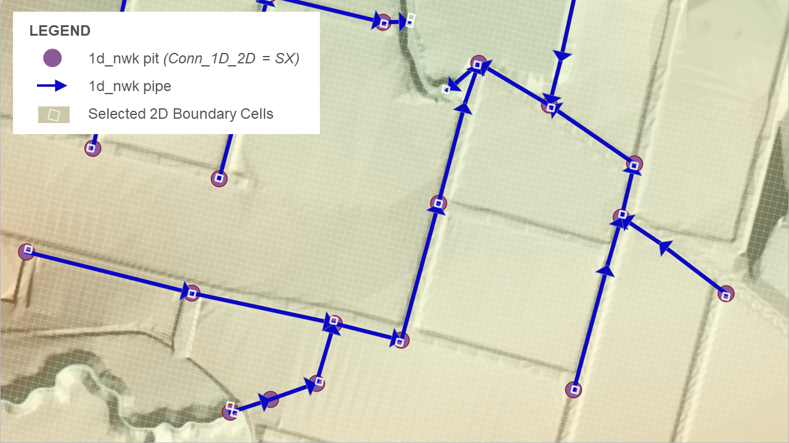
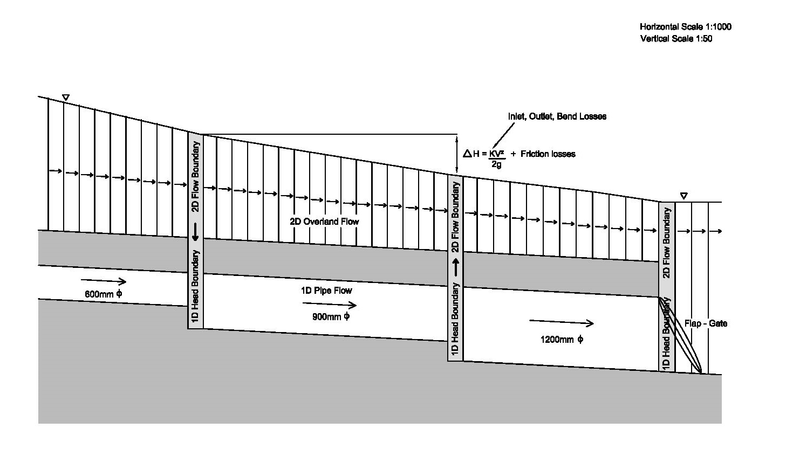
10.2.2.2 SX 2D Flow Boundary to Groundwater
Groundwater connections to 1D elements are useful for representing modelling situations where water infiltrates into or is extracted from the soil other than the default connection to the 2D surface water. These situations can arise in green infrastructure systems, which may incorporate intentionally infiltrating water into the groundwater, draining water from the groundwater or both. For example, retention basins designed to enhance infiltration through natural or artificial soils and to slowly drain stored groundwater to reduce water levels ahead of future rainfall events. Water seepage into the groundwater can be modelled in 1D or 2D, but drains are modelled in 1D.
To define a groundwater connected in a 1D network, a “SX” boundary is used in the 2d_bc GIS layer, with the “GW[1 - 9]” flag specifying the connection to a groundwater layer (see Table 8.6). The connected groundwater layer number follows the “GW” flag. For example, “GW2” would be the flag for a connection with groundwater layer 2. The direction of flow and discharge are determined using the same principles as a SX connection to surface water (see Section 10.2.2.1), except that the 2D water level is replaced by the groundwater pressure level. As such, the 1D node is assigned a water level equivalent to the groundwater pressure level.
In most cases, groundwater to SX connections have some connection mechanism that must be represented in the model to control how much flow is transferred. For example, the flow through slotted or perforated pipes commonly used in detention basins to drain water from the soil can often be approximated using the orifice equation (Equation 5.23) but manufacturers may have other defined relationships for how much water is extracted for a given pressure level.
The depth vs discharge relationship used to define these flows is based on the pressure head in the groundwater layer and the connection attributes (slotted pipe width or size and number of holes in perforated pipe and pipe lengths). The same relationship is used for ESTRY and SWMM but applied differently due to connectivity requirements for the engines:
- ESTRY: A separate inlet or pit is not required. Instead, a “Q” or “M” channel is typically used with the groundwater pressure level vs discharge relationship to represent the interchange between groundwater and 1D. See Section 10.3.5.
- SWMM: An inlet is required at the 1D node (either a junction or a storage node). This inlet is typically a generic inlet (see Table L.17) using a groundwater pressure level vs discharge relationship. See Section 10.4.3.
Guidance for generating depth vs discharge curves is provided on the TUFLOW Wiki Groundwater Modelling Advice page.
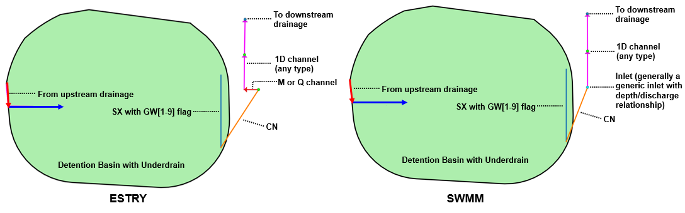
10.3 TUFLOW 1D (ESTRY) to TUFLOW 2D Linking
Linked TUFLOW 1D and 2D domain models use 2D HX and 2D SX boundary types connected to 1D nodes (1d_nwk layer) using CN lines or points in the 2d_bc layer, as described in Section 8.4. The recommended approach for HX and SX connections are summarised in the following sections.
10.3.1 1D Open Channel and 2D Domain Linking
2D_bc HX boundaries are preferred for transitioning between 1D domains and 2D domains (shown in Figure 10.5) or when nesting a 1D open channel network within a 2D domain (shown in Figure 10.2).
An example of these HX connections is provided in TUFLOW Tutorial Module 11. The TUFLOW Wiki 1D2D Boundary Configuration Guidance also includes useful guidance on how to stabilise problematic 1D/2D TUFLOW HPC HX connections.
10.3.2 1D Structures Embedded within 2D Domains
2D_bc SX boundaries are preferred for inserting 1D culverts inside a 2D domain. For example, a 1D culvert underneath a road embankment, as shown in Figure 10.6.
An example of these SX connections is provided in TUFLOW Tutorial Module 3. The TUFLOW Wiki 1D2D Boundary Configuration Guidance also includes useful guidance how to stabilise problematic 1D/2D SX connections.
10.3.3 1D Pipe Network Pits linked to 2D Domains
Pits/Inlets within an urban drainage environment provide bi-directional connectivity between the urban surface represented by 2D domains and the 1D sub-surface pipe network. They use the SX type linking described in Section 10.2.2.1. To simplify the model setup process the SX connections are automatically created by setting the Conn_1D_2D attribute for the pit/inlet point object to “SX” in the 1d_pit or 1d_nwk layer. The type of pit is defined using the ‘Type’ attribute:
- “C” pits use zero length circular culverts to calculate the flow transferred between the 1D network and 2D domain.
- “R” pits use zero length box culverts to calculate the flow transferred between the 1D network and 2D domain.
- “W” pits use the weir equation to calculate the flow transferred between the 1D network and 2D domain.
- “Q” pits use a user-specified Depth-Discharge curve to transfer flow between the 2D domain and the 1D domain, based on the 2D water depth.
Section 5.10.2 contains information about the specification of pit parameters. A pipe network model example is provided in TUFLOW Tutorial Module 5.
10.3.4 Virtual Pits linked to 2D Domains
Compared to the above-mentioned approach, virtual pits are an alternative way to model pits/inlets where the sub-surface pipe network is not being modelled. The flow entering a virtual pit can either be discharged back into the model further downstream or permanently extracted from the model. There are three main approaches to using virtual pits:
- Virtual Pit Inlets (Type ‘VPI’) only are used to extract flow from the model. One examples would be where there is no or insufficient data on the pipe network. Another example is where the pipe network flow discharges to a river (assuming the level in the river does not affect the flow into the pits) and no pit surcharging back onto the 2D domain occurs.
- VPIs are used in with Virtual Pipe Outlets (VPOs), which allow the flow into VPIs to be discharged back onto the model. VPIs can be allocated to specific VPOs via a common network ID. VPOs can have a limiting outlet flow. Once the VPO flow reaches the limit, the excess flow is surcharged back through VPIs, which can be prioritised as to which ones surcharge first. By default, the routing of flow between VPIs and VPOs on the same network is instantaneous (i.e. no lag). However from the 2023-03-AB build, it is possible to apply a lag or shift to the flows from the inlet to the outlet by using the 1d_pit Lag_Approach and Lag_Value attributes.
- Flows from VPIs can be connected to 1D channel nodes to drain flow from the 2D surface and reintroduce them to the 1D domain further downstream. This is a useful approach to modelling the major sub-surface drainage system as a pipe network and the minor system as VPIs feeding into the major system.
Section 5.11 contains more information about virtual pits. Models using these model configurations are provided in the 1D Pipe Network / 2D Floodplain Modelling Example Model Dataset on the TUFLOW Wiki.
As previously mentioned, pits, virtual pits and nodes can be automatically connected to 2D domains using the 1d_nwk Conn_1D_2D attribute (see Table 5.26 and Table 5.25). If Conn_1D_2D is set to “SX”, TUFLOW automatically connects the upstream end of the pit channel or node to the 2D domain.
- For this automated 1D-2D SX connection to establish, it is a requirement that the 2D cell must be active (2d_code, Code = 1). If no active 2D cells are found from any 2D domain, a WARNING 2122 or 2123 is issued.
- The command Pit Default 2D Connection can be used to set the global default value for the 1d_nwk Conn_1D_2D attribute.
- By default, TUFLOW will connect the 1D pit/virtual pit/node to one or more 2D cells at pit connections. The number of 2D cells selected is a function of the flow width of the pit inlet (including the effects of the Number_of and Width_or_Dia 1d_nwk attributes), or the total flow width of the channels connected to the node. The total width of the 2D cells selected is always more than the pit inlet width or width of channels. For example, a width of 3.6 m on a 2 m grid selects two cells. The advantage of selecting more than one 2D cell is to provide enhanced stability at the 1D/2D connection when the 1D flow width exceeds the 2D cell size. The number of 2D connection cells is limited to 10 per pit inlet.
- The 1d_nwk Conn_No attribute can be used to change the number of 2D cells connected as follows:
- A positive value adds that number of 2D cells to the automatic number. In the example above, if Conn_No is set to 1, three (2 + 1) 2D cells are connected. The upper limit is 10 connected cells.
- If Conn_No is negative, this ignores the automatic approach and fixes the number of 2D cells connected to the absolute value of Conn_No. For example, a value of -1 would only connect the pit or node to one (1) 2D cell irrespective of the width.
- If more than one 2D cell is being connected, there are two approaches available for how the 2D cells are selected.
- For pits, the default is the G (on Grade) option that selects the 2nd, 3rd, etc… cells by traversing to the next highest 2D cell that neighbours the 2D cell(s) already selected (this includes diagonal cells, i.e. all 8 cells around a cell are considered). These cells are also automatically lowered to the same height as the first cell so that their ZC value is at or below the pit inlet.
- For nodes, the default is the S (Sag) option that selects the 2nd, 3rd, etc… cells by traversing to the next lowest 2D cell. The ZC values of these cells are not changed as they are already at or below the node invert.
- The above approaches can be changed using the G (Grade) and S (Sag) flags for the 1d_nwk Conn_1D_2D attribute. The G approach is that adopted by default for pits and S for nodes. To override the default approach, specify G or S as appropriate. For example, if the S approach is preferred for a pit that is draining a depression, specify an S flag for the Conn_1D_2D attribute (i.e. “SXS”). Note SX must come first before an optional flag is specified.
The conventional 1D-2D link approach using 2d_bc SX points, lines or regions can still be used to connect 1D channel ends. This gives the user complete control over the 2D cells selected and may still be preferred in situations where large 1D structures are being connected to 2D cells.
10.3.5 TUFLOW 1D (ESTRY) linked to Groundwater
ESTRY can connect directly with groundwater using SX connections as described in Section 10.2.2.2 (see Table 8.6). Groundwater connections to 1D (ESTRY) often include perforated or slotted pipes to convey flow to or from the 1D network. These are typically modelled using a depth vs discharge relationship implemented in ESTRY as a “M” channel (see Section 5.8.1) or a “Q” channel (see Section 5.8.2) directly downstream of the connecting node, as shown in Figure 10.10. The depth vs discharge relationship is often based on the orifice equation (Equation 5.23) where the coefficient will vary depending on the design of the groundwater to 1D connection.
Guidance for generating depth vs discharge curves is provided on the TUFLOW Wiki Groundwater Modelling Advice page.
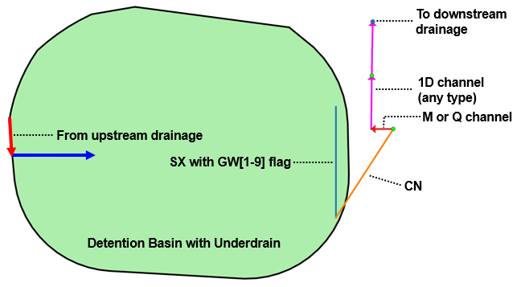
10.4 SWMM to TUFLOW Linking
New in the 2023-03-AD release, TUFLOW’s 1D linking and solver options have been expanded to support the EPA Storm Water Management Model (SWMM), see Chapter 6. The SWMM engine (version 5) has been integrated into the TUFLOW executable as a 2D and 1D dynamically linked 1D solver. SWMM version 5 input (.inp) files can be directly input to TUFLOW.
In TUFLOW-SWMM there are three categories of connections between SWMM 1D and TUFLOW:
- Direct Connections: These apply to inlets/outlets associate with culverts passing through an embankment (modelled in 2D), or also open outlets from a pipe network.
- Storm-Drain Inlets: These apply to surface pits/inlets for capturing overland flow into a pipe network. Geometry information associated with the storm-drain inlet is used to determine the discharge that should flow from the 2D domain into the 1D SWMM pipe network.
- SWMM 1D connection to TUFLOW 1D (ESTRY) that allows 1D domains to be a combination of ESTRY and SWMM.
10.4.1 1D Culvert Connections to 2D Domains
This type of connection is used for cross-drainage such as culverts through an embankment. Due to limitations within SWMM, HX connections are used at the Nodes–Storage object (upstream side) and SX connections are applied at the Nodes–Outfalls object (downstream). This configuration is presented in Figure 10.11.
Where a Nodes–Storage point is connected to the 2D domain using an inlet or HX connection, TUFLOW will compute the discharge that should be transferred between the 1D and 2D domain. If the water level in the 2D domain is higher than the 1D (potentially ponded) water level, then flow will be transferred from the 2D domain to the 1D. The discharge rate will depend on the difference in water levels.
A TUFLOW-SWMM culvert model is provided in the TUFLOW-SWMM Tutorial Module 1.
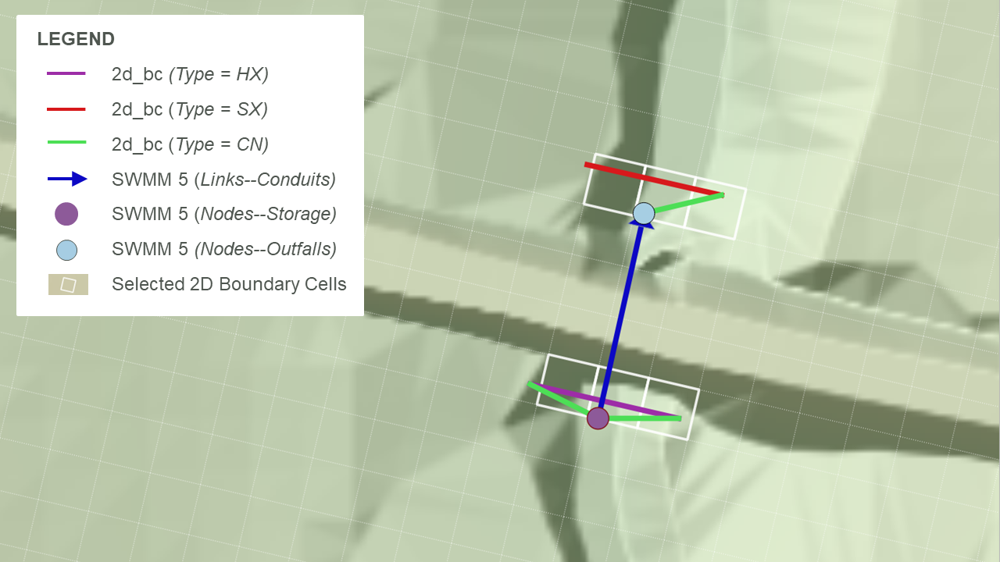
10.4.2 1D Pipe Network Connections to 2D Domains
Storm drain inlets, such as curb or grate inlets, are a special type of SX connection that links 2D domains to 1D pipe networks.
10.4.2.1 Background
Storm drain inlets capture water, often along roadways, and convey it to the storm drain system. The U.S. Department of Transportation Federal Highway Administration’s Urban Drainage Design Manual (Roger Kilgore and A. Tamim Atayee and George Herrmann, 2024) defines the equations used to calculate the inlet flow capture. These equations form the basis of the inlet computations used by SWMM and leveraged in TUFLOW-SWMM.
TUFLOW-SWMM supports all inlet types in SWMM, including: grate, curb opening, combination (grate and curb), slotted drain, custom (curve based), and drop inlets (grate or curb). See Table L.17.
Inlets can be defined as on-sag, on-grade, or automatic via a SWMM Inlet Usage GIS layer (see Section 10.4.2.2 and Table 10.1). On-sag inlets are assumed to be located at low points where the water pools and velocities are low. Under these conditions, the amount of flow captured is only dependent on the water depth and the inlet design. On-grade inlets are located where the water moves past the inlet, rather than pooling (i.e. not located at a depression). Depending on the design of the inlet, the street and curb geometry, the velocity of the water, and the approach flow rate, the inlet may not fully capture the flow along the street.
The equations for on-grade inlets are more complex and incorporate the street cross-section information as well as the approach flow entering the connected 2D cells. Because the inlet discharge is dependent on the approach flow (upstream flow going down the street), the connected cells should cover the expected flow path, often requiring more than a single cell. Additional care is therefore recommended when using on-grade inlets to ensure that the street geometry and the entire flow path are identified correctly.
SWMM allows inlets to be assigned a placement of “Automatic” and to be consistent, TUFLOW-SWMM also has this option. TUFLOW-SWMM will apply the higher of the on-grade or on-sag inlet discharge computations to automatic inlets. Automatic inlets may operate on-grade during some portions of a simulation and on-sag during other, depending on depths and velocities. The time-series output (see Section 15.2.1) can be used to identify inlets that are predominantly operating as inlet controlled, which should be reviewed more carefully for a complete and accurate setup.
The TUFLOW-SWMM automatic option is generally not recommended. Inlets assigned ‘Automatic’ in TUFLOW- as inlets that are on-grade may operate as on-sag and capture more flow than they would in reality. The automatic option tends to overpredict discharges into the storm drain network and therefore underpredict the surface flooding. Depending on the purpose of the modelling, this may be suitable. For example, if pipe sizing is the preferred goal, using the automatic approach may provide more conservative inflows and prevent under sizing of the pipes. Manually specifying the inlet placement as on-grade or on-sag is the optimal approach.
10.4.2.2 Setup
SX type linking described in Section 10.2.2.1 is recommended for pipe network storm-drain inlets. For a TUFLOW-SWMM model, storm-drain inlets can be defined in one of two ways, either:
- Fully defined in a SWMM input (.inp) file format: In this form, all table items listed below (Streets, Conduits, Inlets, and Inlet Usage) are required. In addition, a “2d_bc” layer is required to provide the connectivity between the 1D inlets and the 2D domain.
- Streets: SWMM uses the street cross-section information in this table to help compute storm drain inlet discharges, particularly for on-grade inlets.
- Conduits (Streets): The conduits table is used to define streets for overland runoff and the slope is used in the storm drain inlet discharges. This table is not used directly when running a TUFLOW-SWMM model because the overland flows are calculated within TUFLOW.
- Inlets: This table defines inlet configurations that describe how to determine inlet discharges. Inlets can be defined based on type and shape such as grates, curbs, and combination, or through curves that describe the relationship between depth and inlet discharge or approach flow and inlet discharge. The inlets table defines these parameters. The same inlet configuration can be used in multiple pit locations within the model.
- Inlet Usage: This table identifies the placement of inlets including the street conduit, inlet (configuration), the node receiving the flow, and local parameters including blockage, size of local gutter depressions, and specification of on-grade, on-sag placement, or automatic placement.
- Defined using a SWMM input (.inp) file with a “swmm_inlet_usage” GIS layer: In this form TUFLOW creates a GIS layer to assist in the 1D-2D specification. Due to reduced data requirements and model build workflow efficiency the combined SWMM input (.inp) file / “swmm_inlet_usage” GIS layer format is the recommended approach. Using this format:
- Table 10.1 lists the attributes associated with the swmm_inlet_usage GIS layer.
- Automatic inlet connections between the 1D network and 2D domain can be implemented via the “Conn1D_2D” attribute field (instead of manual specification of SX connection cells within a “2d_bc” GIS layer).
- SWMM 5 “Inlet Usage” tables are not used, and Conduits (Streets) are not required. However, Streets and Inlet tables must be defined in the SWMM input (.inp) file.
- 2d_bc SX lines may be used to manually define connections associated with on-grade inlets. This gives the user complete control over the 2D cells selected for the on-grade flow calculations.
- The conventional 1D-2D link approach using 2d_bc CN lines and SX lines can be used (instead of the automated methods) should greater control be required over the selected 2D cells for the 1D-2D on-grade inlet connections.
- The conventional 1D-2D link approach using 2d_bc HX lines and SX points, lines or regions is required to connect 1D channel ends where “direct” connection to the 2D is desired.
An example model configuration is shown in Figure 10.12, and example TUFLOW-SWMM pipe network models are also provided in TUFLOW-SWMM Tutorial Modules 2, 3 and 4.
Whether inlet usage details are defined in SWMM or in a separate GIS layer, the inlet discharges are computed within TUFLOW using EPA SWMM 5.2 code before being passed to the SWMM engine for the 1D solution computations. This approach has been selected to leverage the 2D domain hydraulic calculations.
If the pressure head in the 1D domain exceeds the 2D water level, the 1D domain will overflow (surcharge) into the 2D domain. The approach used to compute the surcharge discharge depends on the inlet setup and whether or not the SWMM node ponds.
- If the node allows ponding (ponding > 0) (recommended configuration):
- The surcharge discharge is based on the depth vs flow curve for custom inlets or from the orifice equation for other inlet types, plus any additional discharge from the use of the Maximum Inlet Ponded Depth command.
- The coefficient used for inlet surcharging can be specified with the Inlet Surcharge Orifice Coefficient command.
- The discharge for custom curves is applied directly in reverse. For example, a 1D water level 0.3 feet above the 2D water level will produce the equal, though opposite, discharge as a 2D water level 0.3 feet above the 1D water level (or ground elevation).
- If the node does not allow ponding (ponding = 0):
- Any volume that exceeds the maximum nodal water level (YMax) plus any surcharge depth (YSur) is reported as flooding by SWMM, which no longer tracks it. The water is passed directly from the SWMM engine to the TUFLOW 2D cells. Although possible, this approach is not recommended because it prevents the 1D network from utilising the full pressure head in its flow calculations.
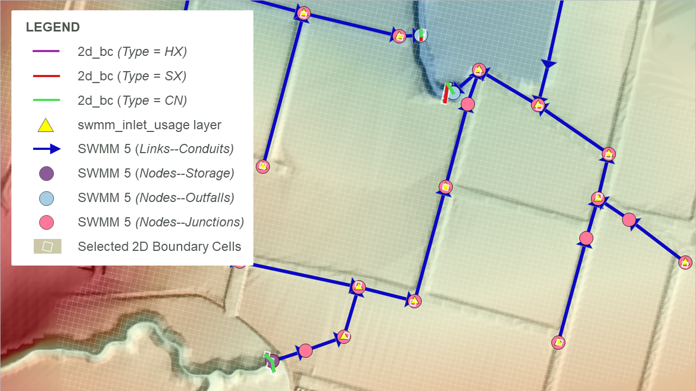
10.4.3 Groundwater Connections to 2D Domains
A SWMM 1D model can connect to TUFLOW groundwater layers as described in Section 10.2.2.2. For groundwater to 1D connections (1D draining groundwater), an inlet is required to represent the connectivity (see Table 8.6), as shown in Figure 10.13. This inlet is typically a generic inlet (see Table L.17) which uses a depth vs discharge relationship to define the flow. If water is being pumped into the groundwater system (e.g. an intentional recharge situation), an inlet is not required.
Guidance for generating depth vs discharge curves is provided on the TUFLOW Wiki Groundwater Modelling Advice page.
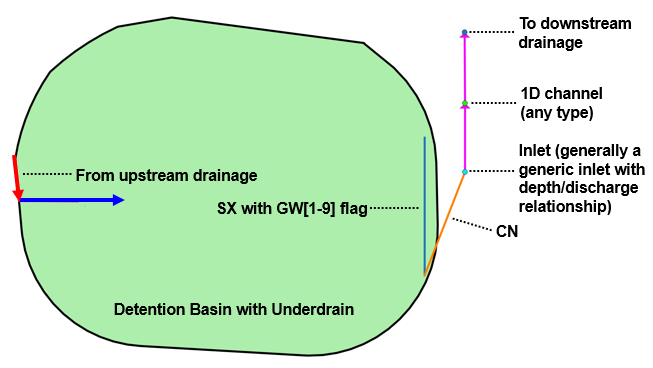
10.4.4 SWMM to TUFLOW 1D (ESTRY) Linking
SWMM can be linked to TUFLOW 1D (ESTRY) allowing the modeller to use the different solvers and their benefits across the 1D domains of a model. Also, note that full support for 1D open channel modelling using SWMM is not yet available, but can be readily modelled using TUFLOW 1D. A typical combined scenario would be 1D open channel modelling using TUFLOW 1D dynamically linked to a SWMM pipe network. Combined SWMM 1D-TUFLOW 1D configurations can be dynamically linked to TUFLOW 2D using the approaches outlined in the previous sections.
SWMM and TUFLOW 1D nodes will be considered linked if:
- A TUFLOW 1D node in a 1d_nwk layer, and a SWMM node layer are snapped to each other, and
- The TUFLOW 1D node has a 1d_nwk Conn_1D_2D attribute of either “X1DH” or “X1DQ”.
- A “X1DH” link means a SWMM 1D water level is being applied at the TUFLOW 1D node (i.e. SWMM sends TUFLOW 1D a water level and TUFLOW 1D sends back a +/- flow to SWMM). This is applicable at SWMM Nodes–Junctions and Nodes–Storage locations.
- A “X1DQ” link means a SWMM inflow/outflow is being applied at the TUFLOW 1D node (i.e. SWMM sends TUFLOW 1D a +/- flow and TUFLOW 1D sends back a water level). This is applicable at SWMM Nodes–Outfalls locations.
- A “X1DH” link means a SWMM 1D water level is being applied at the TUFLOW 1D node (i.e. SWMM sends TUFLOW 1D a water level and TUFLOW 1D sends back a +/- flow to SWMM). This is applicable at SWMM Nodes–Junctions and Nodes–Storage locations.
Note:
- The upstream and downstream inverts for the TUFLOW 1D node linked to SWMM should be set to -99999 unless the node is also being used to set the inverts of channels snapped to it.
- SWMM cannot be connected to TUFLOW 1D and TUFLOW 2D from the same SWMM node. Only a single linkage is supported from a single SWMM node. This limitation is highlighted in the zoomed inset of Figure 10.14. In this example the SWMM Link–Conduit is only linked to TUFLOW 1D, it is not connected to TUFLOW 2D via CN and HX lines. The connection of TUFLOW 2D is associated with the TUFLOW 1D open channels, offset from SWMM by a single short TUFLOW 1D channel length.
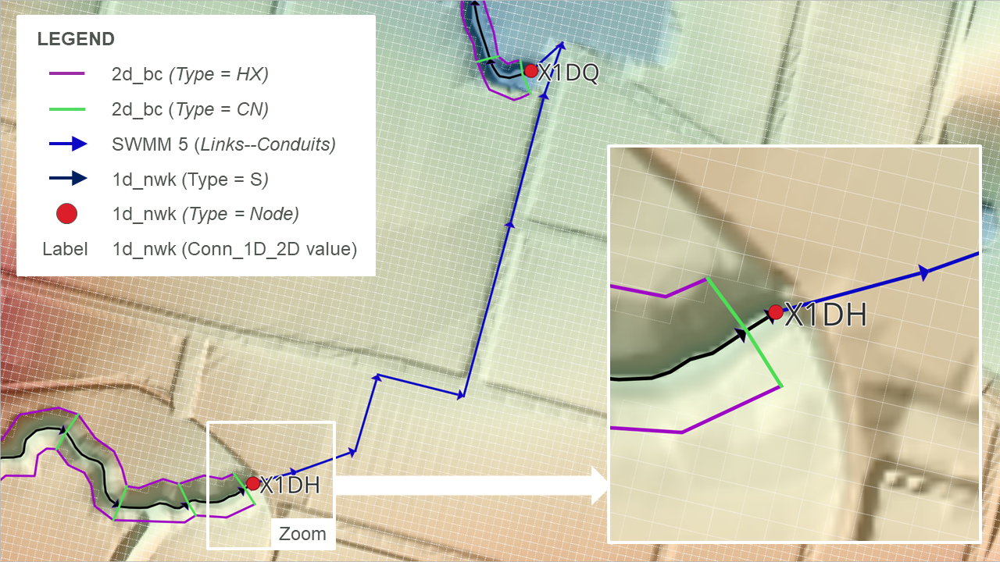
10.5 Flood Modeller to TUFLOW Linking
TUFLOW 2D domains can be dynamically linked to Flood Modeller (previously known as ISIS). Flood Modeller can also link to TUFLOW 1D (previously known as ISIS-TUFLOW-PIPE or ISIS-ESTRY).
Unlike TUFLOW 1D or SWMM, Flood Modeller is not included in the TUFLOW executable download. It must be installed and configured to support the linking to TUFLOW. The TUFLOW Link must be purchased from Jacobs and an appropriate software version used. It is recommended that TUFLOW 2020-10-AD or later is used in conjunction with Flood Modeller Version 5 or later. Figure 10.15 provides the compatibility between Flood Modeller and TUFLOW for versions prior to Flood Modeller 6 and TUFLOW 2020-10-AE. Post these releases, all TUFLOW Classic and TUFLOW HPC (including Quadtree) functionality is supported and compatible with Flood Modeller. Versions prior to Flood Modeller 4.5 will support TUFLOW Classic only. Regardless of the TUFLOW 2D solver (i.e. Classic or HPC), the linking mechanism is the same.
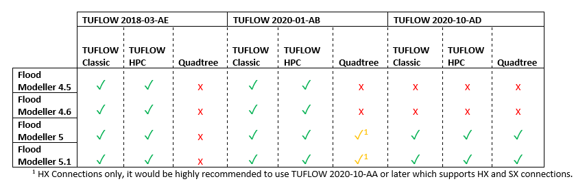
10.5.1 Flood Modeller 1D to TUFLOW 2D Linking
To link Flood Modeller’s 1D scheme to TUFLOW 2D, a TUFLOW 1d_x1d GIS layer defining the locations of the Flood Modeller 1D nodes is required. The 1d_x1d layer can either be created by the user or by the Flood Modeller interface.
For linking 1D Flood Modeller to TUFLOW 2D, the TUFLOW 1d_x1d layer requires only one attribute, namely a string 12 characters long that contains the unique IDs of the Flood Modeller 1D nodes/sections. Any other attributes are presently ignored. Creation of this layer manually is possible through exporting a text or csv file containing the Node ID and XY coordinates of the nodes, provided the Flood Modeller co-ordinates are in the same projection as the TUFLOW model.
The IDs are case sensitive (because Flood Modeller IDs are case sensitive).
In the .tcf file, use either the Read GIS X1D Nodes or Read GIS X1D Network command to read the 1d_x1d layer, as shown in the example below:
Read GIS X1D Network == ..\model\gis\1d_x1d_FM_nodes.shpThe digitising of channels (lines) within a 1d_x1d GIS layer is optional and is only necessary if the model uses 1D Water Level Lines to display map outputs in the 1D domain (refer to Section 11.2.4 for further details). If GIS layer(s) are provided including channels, they are also read into the .tcf file using the command Read GIS X1D Network, and should be used with Read GIS X1D WLL.
The example below shows the use of these commands (with the nodes and channels in separate files):
Read GIS X1D Nodes == ..\model\gis\1d_x1d_FM_nodes.shp
Read GIS X1D Network == ..\model\gis\1d_x1d_FM_channels.shp
Read GIS X1D WLL == ..\model\gis\1d_x1d_FM_wlls.shpNote, legacy models may include reference to ISIS in the above commands. For example, “X1D” in Read GIS X1D Network can be substituted with “ISIS” (i.e. Read GIS ISIS Network).
Connections (CN) in the 2d_bc layer are snapped to the nodes in the 1d_x1d layer in the same manner as a TUFLOW 1D 1d_nwk layer.
The following restrictions apply when connecting Flood Modeller nodes to TUFLOW 2D:
- HX lines should only be connected to Flood Modeller RIVER units. Flood Modeller INTERPOLATE and REPLICATE units are also permitted. This requires that the Flood Modeller unit between consecutive connections along a HX line is always a RIVER unit. If this is not the case, an “ERROR 2043 - 2D HX cell has been assigned to a non-RIVER unit” occurs. Where a non-RIVER unit occurs (e.g. at a structure), the HX line needs to be broken.
- Special Flood Modeller units may be required for some HX and SX connections (refer to the Flood Modeller documentation).
It is not necessary for all Flood Modeller RIVER units between the upstream and downstream ends of the HX line to be connected. Nodes/Sections may be intentionally or accidentally omitted as with TUFLOW 1D nodes. Please note that this is not recommended because by missing or omitting nodes the 1D water level water surface gradient that is applied along the HX lines will not be correctly represented.
TUFLOW checks whether the ZC elevation of a HX cell lies above the bed of the 1D nodes and that the ZC elevation of a SX cell lies below the 1D node bed, and if not, an error occurs (see Section 10.2.1 and Section 10.2.2).
Use the _x1d_nodes_check file to cross-check the external 1D nodes/sections that were read by TUFLOW, and the associated information passed from the 1D scheme. Also use the _1d_to_2d_check file to cross-check the correct HX and SX cells are connected to the correct channels (units). The HX cells in the _1d_to_2d_check layer can be colour coded using the “Primary_no” attribute to identify the external 1D channel (unit) that the flow in/out across the HX cells is associated with. For Flood Modeller, by default HX cells are assigned to the upstream end of a river unit as a lateral flow as per Flood Modeller conventions.
Note, the start and end simulation times and the timestep are controlled by Flood Modellers GUI input fields, and any Start Time, End Time and Timestep commands are ignored in the .tcf file. It is best practice to remove (or comment out) these commands. Within the Flood Modeller GUI, the Flood Modeller 1D timestep can differ from the TUFLOW timestep. It is recommended that the Flood Modeller timestep be set as an integer divisor of the TUFLOW timestep.
No TUFLOW 1D .ecf file is required, and the TUFLOW 1D ESTRY Control File command should not be specified unless there are also TUFLOW 1D domain(s) in addition to the external scheme 1D domain(s). Flood Modeller nodes can be directly linked to TUFLOW 1D nodes allowing models to have a combination of Flood Modeller 1D and TUFLOW 1D (ESTRY) - refer to Section 10.5.2. An example model demonstrating both ‘SX’ and ‘HX’ type links between Flood Modeller and TUFLOW is available here.
Note that Flood Modeller HX links may benefit from assigning a Form Loss Coefficient (typically 0.1 to 0.5 in value) to HX lines using the 2d_bc “a” attribute. For HX lines running along the riverbanks, especially those with high overtopping velocities, improved stability and representation of the energy losses associated with the water peeling off from the river to the floodplain or vice versa can be achieved.
For model review purposes, the .tcf command Write X1D Check Files writes out check_x1D_H_to_2D.csv and check_2D_Q_to_x1D.csv files. These contain the water levels and flows sent to the 2D to/from Flood Modeller.
Example models demonstrating TUFLOW / Flood Modeller linking are available from the TUFLOW Gitlab User Group. Detailed documentation for the example models is available from the TUFLOW Wiki 1D Flood Modeller Connectivity. A TUFLOW / Flood Modeller linked model is provided in TUFLOW / Flood Modeller Tutorial Module 1.
10.5.2 Flood Modeller 1D to TUFLOW 1D (ESTRY) Linking
TUFLOW 1D (ESTRY) domains can be dynamically linked with Flood Modeller. The most common reason this is carried out is to utilise TUFLOW 1D’s powerful pipe network features (see Section 5.10).
Flood Modeller and TUFLOW 1D (ESTRY) nodes will be considered linked if:
- A TUFLOW 1D node in a 1d_nwk layer, and a Flood Modeller node in a Read GIS X1D Nodes or Read GIS X1D Network layer are snapped.
- Note, legacy models may include reference to ISIS in the command. For example, “X1D” in Read GIS X1D Nodes can be substituted with “ISIS” (i.e. Read GIS ISIS Nodes).
- The TUFLOW 1D node connection method is defined using the TUFLOW 1D 1d_nwk Conn_1D_2D attribute. If the Conn_1D_2D field is blank, a “X1DH” type is assumed - this is the default approach. Alternatively, a value of “X1DH” or “X1DQ” can be manually specified.
- A “X1DH” link means a Flood Modeller 1D water level is applied at the TUFLOW 1D node (i.e. Flood Modeller sends TUFLOW 1D a water level and TUFLOW 1D sends back a +/- flow to Flood Modeller).
- A “X1DQ” link means a Flood Modeller inflow/outflow is being applied at the TUFLOW 1D node (i.e. Flood Modeller sends TUFLOW 1D a +/- flow and TUFLOW 1D sends back a water level).
- If the end of the TUFLOW 1D channel and the snapped Flood Modeller / TUFLOW 1D nodes are not in the same location a TUFLOW 1D 1d_nwk connector “X” channel type can be used to connect the end of the linked TUFLOW 1D channel to the TUFLOW 1D node snapped to the Flood Modeller node.
- Note that the upstream and downstream inverts for the TUFLOW 1D node linked to Flood Modeller should be set to -99999 unless the node is also being used to set the inverts of channels snapped to it.
- As a general rule, a TUFLOW 1D X1DH (the default) would be used for most Flood Modeller TUFLOW 1D links. An X1DQ might be more appropriate where a Flood Modeller model stops and flows into a TUFLOW 1D model.
Generally, a TUFLOW 1D timestep will be smaller than the Flood Modeller timestep. In these cases, the total volume is accumulated over all TUFLOW 1D timesteps within a Flood Modeller timestep, and applied to the Flood Modeller model as a discharge by dividing the volume by the Flood Modeller timestep.
When running a TUFLOW 1D Flood Modeller linked model, the mass balance output _MB1D.csv file includes four new columns (which are not present if the 1D-1D linking is not used):
- X1DH V In: The volume of water in via a X1DH link.
- X1DH V Out: The volume of water out via a X1DH link.
- X1DQ V In: The volume of water in via a X1DQ link.
- X1DQ V Out: The volume of water out via a X1DQ link.
Also, for model review purposes, the type or existence of a connection can be checked following a simulation by viewing the Conn_1D_2D attribute in the _nwk_N_check layer. The _messages GIS layer also contains CHECK 1393 messages at each TUFLOW 1D node linked to a Flood Modeller node.
Example models demonstrating TUFLOW Flood Modeller linking are available from the TUFLOW Gitlab User Group. Detailed documentation for the example models is available from the TUFLOW Wiki 1D Flood Modeller Connectivity. A TUFLOW 1D Flood Modeller linked model is also provided in TUFLOW / Flood Modeller Tutorial Module 2.
10.6 12D-DDA to TUFLOW Linking
12D Dynamic Drainage Analysis (DDA) is developed by 12D Solutions based on the USA EPA-SWMM solver. 12D have developed a TUFLOW interface within their own 12D GUI that offers GUI functionality for 1D and 2D modelling tasks. The interface provides users with the ability to build models and view result entirely within its GUI. Alternatively, existing TUFLOW files created in a GIS form can be imported and used in the 12D environment.
A TUFLOW engine licence, either purchased directly from 12D Solutions or from TUFLOW is required to use TUFLOW with 12D-DDA. If purchased from TUFLOW, the 12D modules, such as the TCF Interface Module and 12D-DDA Drainage Integration (Linking) Module, will need to be purchased from 12D Solutions.
For information detailing how to complete TUFLOW modelling using the 12D GUI, and linking TUFLOW 2D’s solvers with 12D-DDA, please contact 12D Solutions.
10.7 Multiple 2D Domains
The Multiple 2D Domain Module license provides access to TUFLOW HPC’s Quadtree and TUFLOW Classic’s Multiple 2D Domain (M2D) features. Both of these features allow the 2D cell resolution (cell sizes) to vary across the model. However, they are very different in their hydraulic solution and construct as described below.
10.7.1 Classic’s M2D Feature versus HPC Quadtree
- TUFLOW HPC only supports one 2D domain, however, the 2D cell size can be varied within the domain using the quadtree grid feature. In contrast, TUFLOW Classic’s M2D feature allows different 2D domains of different cell size/orientation to be linked together via hidden 1D nodes and HX lines.
- For a HPC quadtree grid, the numerical solution remains a full 2D solution without loss of accuracy, undesirable numerical artefacts or wave reflections when transitioning from one cell size to another. For Classic’s M2D feature, there is a loss of accuracy, particularly where the flow is complex/circulating and the assumptions associated with momentum and the linear water level profile associated with HX lines are influential.
- TUFLOW HPC Quadtree grids are set up by the modeller using a largely automated approach. Definition of 2D cell resolution regions is all that’s required. By comparison, TUFLOW Classic M2D requires manual definition of each 2D domain and the linkage between domains using 2D-2D links.
Please contact sales@tuflow.com if you wish to use these features, but do not have the M2D/Quadtree Module enabled on your licence.
Due to the workflow efficient nature of its implementation, superior stability, numerical accuracy and preservation of inertia, TUFLOW HPC Quadtree has superseded TUFLOW Classic’s Multiple 2D Domain (M2D) feature as the recommended approach for models that require varied 2D cell sizes within a single model.
For a complete description of the 2D TUFLOW HPC Quadtree solution and associated commands, please refer to Section 7.3.1.
An example TUFLOW HPC Quadtree model is available in TUFLOW Tutorial Module 7. A video demonstration the implementation of this multiple 2D Domain feature is also available in the TUFLOW Library.
10.7.2 TUFLOW Classic’s Multiple 2D Domains
When using TUFLOW Classic with the M2D feature, any number of 2D domains of different cell size and orientation can be combined to form one model. The 2D domains can be linked via 1D domains or directly to each other. For example, a 1D domain of a river system may have several 2D domains embedded to represent several towns where a more detailed analysis is required. Alternatively, direct 2D to 2D linking can be achieved by using the 2d_bc 2D link type (see Section 8.4). Examples of these model configurations are shown in Figure 10.16 and Figure 10.17.
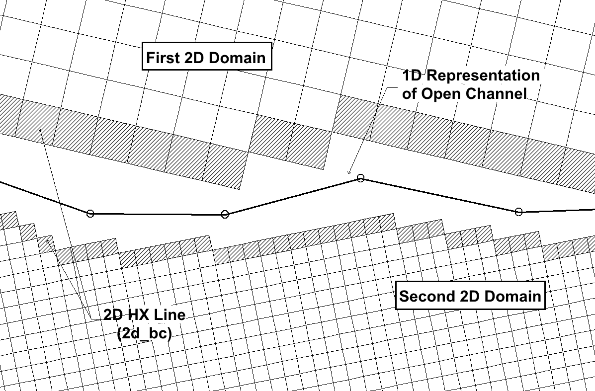
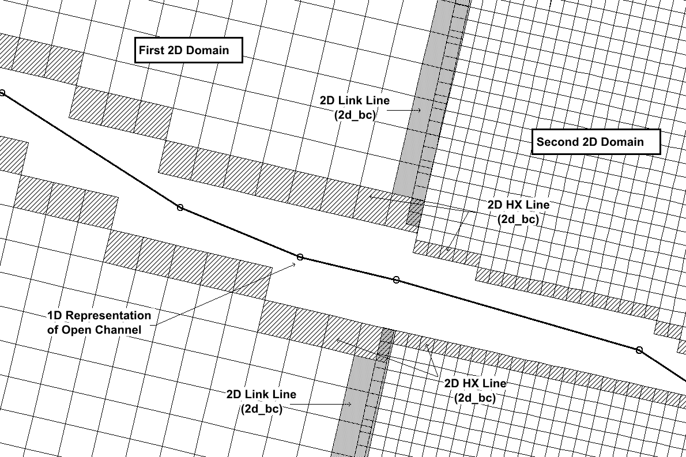
To specify more than one 2D domain use Start 2D Domain and End 2D Domain in the .tcf file to start and end blocks of commands applicable for each 2D domain. The ESTRY Control File and BC Database commands are independent of the 2D domain block. As such they are typically not included within the 2D domain block.
The mandatory .tcf commands that occur within a 2D domain block are:
Optional commands that can be used are:
- Cell Wet/Dry Depth
- Instability Water Level
- Read GIS FC
- Read GIS GLO
- Read GIS IWL
- Read RowCol IWL
- Read GIS LP
- Read GIS PO
Specifying one of the above commands outside a Start/End 2D Domain block does not apply that command to all 2D domains.
For example, specifying Cell Wet/Dry Depth outside a lock will not set the Cell Wet/Dry Depth value to all 2D domains, and causes ERROR 2107 to occur.
An example of using 2D domain blocks is given below:
Start 2D Domain == East_Domain
Geometry Control File == ..\model\east_domain.tgc
BC Control File == ..\model\east_domain.tbc
Timestep == 10
End 2D Domain
Start 2D Domain == West_Domain
Geometry Control File == ..\model\west_domain.tgc
BC Control File == ..\model\west_domain.tbc
Timestep == 5
End 2D Domain
BC Database == ..\bc_dbase\bcdbase_Q100_2hr_001.csv
ESTRY Control File == ..\model\1D_domain.ecf
Read Materials File == ..\model\n_values.tmf
Start Time == 0
End Time == 12Multiple 2D domain models use the 2d_bc “2D” link type (see Table 8.5 and Table 8.6) as the boundary cells that transfer flow between the neighbouring domains. The link type creates hidden 1D nodes at each vertex along the 2D link line and also at a regular interval, as defined by the “d” attribute (see Table 8.6). The hidden 1D nodes act as storage that convey the water from one 2D domain to the other.
The water levels along the 2d_bc 2D link line are linearly interpolated using the water levels in the hidden 1D nodes. If the water level profile in reality is not close to linear between vertices, strange flow patterns may occur which can lead to model instability or unrealistic results. As such, appropriate resolution of the hidden 1D nodes is an important feature of multiple 2D domain models.
The .tcf command Reveal 1D Nodes can be used to view the hidden 1D nodes. The hidden nodes will be written to the nwk_N check layer, as shown in Figure 10.18 . For multiple domain models using the 2d_bc “2D” link, note that this GIS layer must be read into the .tbc files of both 2D domains. The 2D link can then be checked by viewing the _2d_to_2d_check layer which displays the 2D cells used to link the two domains together. These features, and their check files are shown in Figure 10.18.
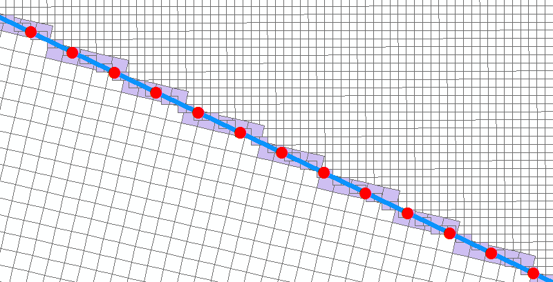
The following guidance is recommended when defining the location and orientation of the 2d_bc “2D” link.
- 2D link lines will be most stable if digitised perpendicular to the dominant flow direction in high conveyance locations (e.g. rivers and creeks).
- Orientation of the 2D link lines is less critical in low conveyance regions, such as floodplain storage areas (i.e. perpendicular orientation is not a necessity). High resolution definition of the hidden 1D nodes may be required. If used, the automated hidden 1D nodes distance attribute “d” should not be set finer than three times the larger cell size.
If the extents of the 2D domains overlap, it will be necessary to deactivate the overlapping cells in the other domain. Using the example above, the active area for the ‘West Domain’ will need to be deactivated in the .tgc file of the ‘East Domain’ and vice versa. The Read GIS Code Invert command is useful for this process as it allows for the same GIS layer to be used to active/deactivate cells.
A unique model Timestep is recommended for each 2D domain. The timestep should be defined so that it conforms to the Courant stability criteria for each domain, as discussed in Section 3.4.3. The timesteps of all 2D and 1D domains should be an integer multiple of one another.
A TUFLOW Classic Multiple 2D Domain model is available in TUFLOW Tutorial Module 9 Archive.